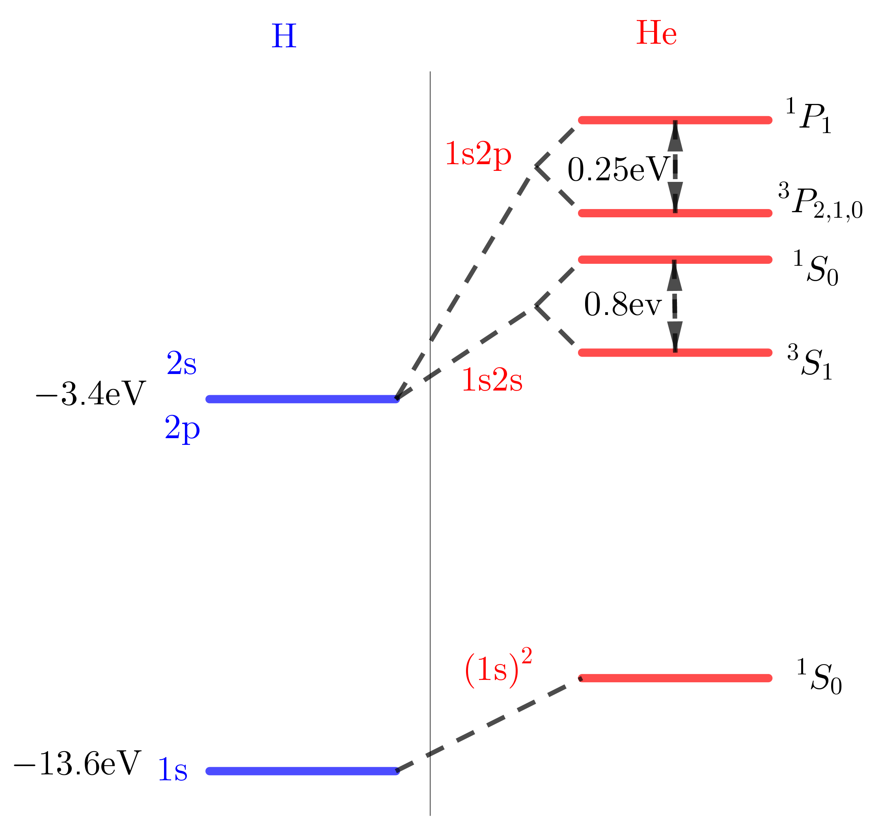

Atomic and Optical Physics I, 06 Atoms II: Hydrogen
Table of Contents
1. Information
2. Atomic units
Natural units, atomic units.
In atomic units, no speed of light \(c\) , because there is no speed of light in Schrodinger Equation. So, atomic units
- charge of electron: \(e\)
- mass of electron: \(m\)
- \(h\)
Length (Bohr radius): \(a_0 = \frac{\hbar^2}{m e^2}\)
Energy (One Hartree 27.2 eV): \(\frac{e^4m}{\hbar^2} = \left( \frac{e^2}{\hbar c} \right)^2m^2c^2 = \alpha^2m c^2\) , where \(\alpha = 1/137\) .
Velocity: \(mv^2 = \frac{e^4m}{\hbar^2}\) , \(v = \frac{e^2}{\hbar} = \alpha c\)
Electric field: \(\frac{e}{a_0^2} = 5.1\times 10^9 \mathrm{V/cm}\)
3. Fine-structure constant: \(\alpha\)
The fundamental constant which should ultimately be predicted by a complete theory.
\(\alpha \ll 1\) means: electromagnetic interactions are weak.
If energy uncertainties become \(\Delta E = mc^2\) , then the concept of single particles breaks down. \(\Delta E = mc^2 \Rightarrow \Delta p \sim m c, \Delta x \sim \frac{\hbar}{mc} = \lambda_{\mathrm{Compton}}\) .
Coulomb interaction at \(\lambda_{\mathrm{Compton}}\) : \(E_{\mathrm{Compton}} = \frac{e^2}{\lambda_{\mathrm{Compton}}} = \frac{e^2mc}{\hbar}\)
So, "strongest" Coulomb interaction
\begin{align} \frac{E_{\mathrm{Compton}}}{mc^2} = \frac{\frac{e^2mc}{\hbar}}{mc^2} = \frac{e^2}{\hbar c} = \alpha \end{align}4. One electron atoms with cores
What is the leading correction to the properties of this atom due to the fact that we have an ionic core instead of a proton?
receives correction
- A. \(\frac{R}{n^2} + \delta\)
- B. \(\frac{R}{n^2} + \frac{\delta}{n^2}\)
- C. \(\frac{R}{n^2} + \frac{\delta}{n^3}\)
- D. \(\frac{R}{(n - \delta)^2}\)
C, D are both right.
Derivation:
Perturbation theory
\begin{align} \psi_{nl}(r) \overset{r \to 0}{\rightarrow} r^l \frac{1}{n^{3/2}} \end{align} \begin{align} H = H_0 + H' \end{align}\(H'\) is localizes around origin, so
\begin{align} \Delta E_n = \langle \psi_{nl} | H' | \psi_{nl} \rangle\propto \frac{1}{n^3} \end{align}exact \(\frac{\delta_l2R}{n^3}\) . this means
\begin{align} - E_n = \frac{R}{n^2} + \frac{2 R\delta_l}{n^3} = \frac{R}{(n - \delta_l)^2} \end{align}\(\delta_l\) : quantum defect.
Other derivations: JWKB , model \(H' \propto \frac{1}{r^2}\) .
5. Spectroscopic notation
Isolated atom. We have (good) quantum number \(J, M_{J}\) , we call
one level has \(2J + 1\) sublevels(or states)
\(\vec{J}\) can have contributions from several \(e^-\) , from spin \(\vec{S}\) and orbital angular momentum \(\vec{L}\)
Often(light atoms), the different electrons umndergo LS coupling.
\begin{align} \vec{L} = \sum \vec{l}_i , \quad \vec{S} = \sum \vec{s}_i \end{align}So let's assume we have an atom which has total angular momentum \(J\) , which is the sum of orbital angular momentum and spin
\begin{align} \vec{J} = \vec{L} + \vec{S} \end{align}in this case a level is designated by
\begin{align} ^{2S + 1}L_{J}, \quad L = S, P, D, \cdots \end{align}Hydrogenic atom: preceed term by the principal quantum number n.
Example:
Na( \(n = 3\) )
\begin{align} 3^2S_{1/2} \end{align}first excited states
\begin{align} 3^2P_{1/2, 3/2} \end{align}
sometimes one specifies the configuration
\begin{align} 1s^2, 2s^2, 2p\cdots \end{align}products of symbols \(nl^m\) .
Na: \(1s^22s^22p^63s\)
6. The helium atom: effects of two electrons
Ref: Sec1 Conhen-Tannoudji QM, Gasiorowicz
6.1. Ground states
If we regard it as a hydrogen problem, and we put two electrons into the \(1s\) state ( \((1s)^2\) ), we would expect that, based on the hydrogenic model, the binding energy of that is, per electron, \(13.6Z^2 = 54.4 \mathrm{eV}\) . So that would mean that the binding energy of the ground states is \(-108 \mathrm{eV}\) . However, the experimental result is \(- 79 \mathrm{eV}\) . So we find that there is a big discrepancy of \(29 \mathrm{eV}\)
\begin{align} -108 & \mathrm{eV} \\ -79 & \mathrm{eV} \\ ---------&---- \\ 29 & \mathrm{eV} \end{align}We neglected \(e^--e^{-}\) interactions! Perturbation operator
\begin{align} V' = \frac{e^2}{r_{12}} \end{align} \begin{align} \psi_G = \psi_{100}(1)\psi_{100}(2) \end{align} \begin{align} \Delta E = \langle \psi_G | V' | \psi_G\rangle = 34 \mathrm{eV} \end{align}removes most of the discrepancy!
Improve by variations wavefunction \(Z \to Z^{*}\) .
6.2. First excited states
Starting again with the hydrogenic model. In hydrogen, the 2s and 2p state are degenerate, so we have two configurations contributing to the same energy, 1s2s and 1s2p . The binding energy in the hydrogen model is a quarter of a Rydberg \(3.4 \mathrm{eV}\) . We have to scale it by \(Z^2\) , and we find \(13.6 \mathrm{eV}\) .
But now what happens is that we have to introduce the Coulomb energy between the electrons. And if you do that, it shifts up the levels in different ways. So why it is different?
You have two electrons, and you have the helium nucleus. First you put in the 1s electron, and now the second electron, when it is in a 2p state, it's further out. And it pretty much experiences the charge of the helium nucleus shielded by the 1s electron, and therefore, it sees in effect a smaller nuclear charge. Whereas, the 2s electron penetrates deeper, gets closer to the nucleus and will still realize that the nucleus has a charge of 2, and not a shielded charge. So, therefore, you would expect that the shielding effect due to the innermost electron is more important, has a bigger effect for 2p electron than for the 2s electron. And therefore, the 2p electron has a smaller binding energy . It's actually comparable to the binding energy of the 2p state in hydrogen (4eV). And this effect is smaller for 2s state.
But now, each level under goes further splitting. We will have two different terms for (1s2s), one is singlet \(^1S_0\) , and one is triplet \(^3S_1\) . And this splitting is \(0.8 \mathrm{eV}\) . The same for 1s2p \(^3P_{2, 1, 0}\) , \(^1P_1\) . the splitting is also on the order of an eV (0.25 eV).
How can the spin cause a splitting? Because the spin so far has not appeared in our Hamiltonian. We really have a Hamiltonian which has only the Coulomb energy, and the spin is not part of it. We don't have a magnetic field, to which the magnetic momentum of the spin would couple. And also we have not yet introduced spin orbit coupling. But if this is on you mind, take it off you mind. Spin orbit coupling is a much, much smaller effect. Energies on the order of 1 electron volt, you just cannot get from spin orbit coupling. Spin orbit coupling is smaller that electronic energies. It is smaller by the fine structure constant. So the typical scale for spin orbit coupling is much smaller.
So, we are focusing now on the splitting.
Wave function \(\psi_{S, A}\times \mathrm{SPIN}\)
\begin{align} \psi_{S, A} = \frac{1}{\sqrt{2}} \left[ \psi_{100}(r_1)\psi_{200}(r_2) \pm \psi_{100}(r_2)\psi_{200}(r_1) \right] \end{align}\(S\) : symmetry spatial WF, \(S = 0\) , \(^1S_0\) . \(A\) : antisymmetry spatial WF, \(S = 1\) , \(^3S_1\) .
As long as we have non-interacting electron, the two wave functions are degenerate. But now we want to bring in the Coulomb energy between the two electrons \(\frac{e^2}{r_{12}}\)
\begin{align} \Delta E =& \frac{1}{2}\int \int \frac{e^2}{r_{12}} \left[|\psi_{100}(r_1)|^2|\psi_{200}(r_2)|^2 + (r_1\leftrightarrow r_{2})\right] \pm \frac{1}{2}\int \int \frac{e^2}{r_{12}} \left[\psi_{100}^{*}(r_1)\psi_{200}^{*}(r_2) \psi_{100}(r_2)\psi_{200}(r_1)+ (r_1\leftrightarrow r_{2})\right] \\ =& \Delta E^{\mathrm{Coul}} \pm \Delta E^{\mathrm{exch}} \end{align}\(\Delta E^{\mathrm{exch}}\) DEPENDS on spin. Triplet state has lower energy, because antisymetirc spatal WF reduces the \(e^--e^-\) repulsive interaction. This can be written as ( \(S = 0, 1\) )
\begin{align} \Delta E = \alpha + \beta \vec{S}_1\cdot \vec{S}_2 \end{align}use
\begin{align} 2\vec{S}_1\cdot \vec{S}_2 = - \vec{S}_1^{2} - \vec{S}_2^{2} + \vec{S}^2 \end{align}we get
\begin{align} \Delta E = (\alpha - \frac{1}{4}\beta) \pm (-\frac{\beta}{2}) \end{align}where \(\alpha - \frac{1}{4}\beta = \Delta E^{\mathrm{Coul}}, -\frac{\beta}{2} = \Delta E^{\mathrm{exch}}\) . It looks like a ferromagnetic spin-spin interaction. And well, it looks like it, it is actually an effective ferromagnetic spin-spin interaction. However, the coupling is purely electrostatic, not magnetic.

7. New feature of two electrons
What about possible transitions between triplet and singlet?
Question: What Fields(couplings) drive singlet-triplet transition?
- A. optical fields (dipole operator)
- B. rotating magnetic fields
- C. boths
- D. none

ANSWER: \(\Delta S = 0\) , selection rule. Dipole operator acts only on spatial WF, NOT in spin part. Transverse B fields: \(S_x, S_y, S_{x, y} = (S^+ \pm S^-)/\sqrt{2}\) , so \(|S| = \mathrm{const}\) .